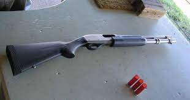

Uso civil:
El uso de armas de fuego en el ámbito civil es una enorme responsabilidad para quien las porte, debido a todos los requisitos que se necesitan cumplir, desde el entrenamiento hasta pruebas psicológicas necesarias para determinar si el portador de un arma es apto física y mentalmente, no cualquiera puede portarlas, se debe tener muy claro el lugar y momento para su uso, alguien con tendencias violentas, mal manejo de la ira o un buscapleitos son ejemplos de personas no aptas para portar armas, no solo de fuego, sino de ningún tipo. Tipos de armas de fuego:
Existen muchas maneras de clasificar las armas de fuego, pero esta vez se clasificaran según los parámetros de tamaño, munición que disparan, propósitos de uso y rangos de combate a distancia. No se incluirán armas de avancarga y las armas con mecanismo de acción de palanca solo tendrán mención en la categoría de escopetas.
Armas de caza:
Fusiles de asalto: Fusiles con propósito de uso en combate a distancias medias y largas, tienen fuego selectivo, es decir, la posibilidad de seleccionar entre 2 o 3 modos de fuego (automático, ráfaga y semiautomático), son armas de alta potencia y las municiones más famosas para estas armas son las de calibre 5.56x45 OTAN(común entre rifles maverick) y 7.62.39 OTAN(común entre rifles kalashnikov) los dos ejemplares mas famosos y a la vez más utilizados son el M16 y el AK74, existe la subcategoría de carabinas, son básicamente versiones de fusiles de asalto pero con tamaño y potencia reducidos.

Fusiles de precisión: Llamados también "rifles de francotirador" son fusiles diseñados para ser altamente precisos a distancias mucho mayores que las de un fusil común y corriente, su uso es recomendado solo a personas con entrenamiento de francotirador debido también a la potencia de estos rifles, famosos por utilizar munición .50 BMG, .308 o .408 CheyTac y lo normal es que sean de acción de cerrojo, el modelo más famoso gracias a los videojuegos es el L6 AWP.
Fusiles de tirador designado: En cuando al concepto, son como las carabinas de los fusiles de precisión, excepto que estos no adaptan modelos de rifles de francotirador, estan pensados para el combate urbano por lo que suelen ser semiautomáticos, comunmente usan munición 7.62x51mm OTAN y su ejemplar más conocido el Mk14 EBR.
Subfusiles: Son fusiles compactos con una potencia inferior a la de un fusil de asalto pero con una cadencia de disparo superior, nacieron en la primera guerra mundial, el primer subfusil es de fabricación italiana pero fue el ejercito alemán quien lo empleo por primera vez en el campo de batalla; pensado para asaltar trincheras y movilizarse entre el barro y las alambradas. Su uso actual está en el combate de rango corto y medio, suelen disparar munición de pistola como la 9mm y el subfusil por excelencia es el mp5.
Subfusiles compactos: Están pensados para una mejor portabilidad, no se diferencian demasiado de los subfusiles y de hecho, a menudo con cunfundidos o directamente solo se cree que existen los subfusiles. podría decirse que son como las carabinas de los subfusiles pero al igual que con los fusiles de tirador designado, estos no solo son una versión compacta de los subfusiles, también hay modelos que son exclusivos de esta categoría, un ejemplar claro es el Skorpion vz. 61.
Pistolas ametralladoras: Esta es la categoría más confusa, ya que incluso entre subfusil y subfusil compacto hay diferencias claras, las pistolas ametralladoras a veces casi no se pueden diferenciar de los subfusiles compactos, por esta razón se han ideado maneras de identificar una pitola ametralladora, algunos de estos parámetros son: Tienen estructura similar a la de una pistola, son muy imprecisos pero tienen una cadencia superior a la de los subfusiles, el cargador se encuentra en la empuñadura, etc. Disparan municiones de pistola y la más famosa, gracias a que es el arma que suelen portar los asesinos a sueldo en las películas (también en la vida real) es la Mac 11, el rango en el que es recomentable utilizar estas armas es el mismo que el de las escopetas con niveles altos de dispersión, uno muy corto.
Pistolas: También llamadas armas de mano o cañones de mano (ya que si se sostienen con una sola mano también son efectivas, aunque no es lo ideal) son las armas de fuego para uso civil por excelencia, porque son las más fáciles de esconder, maniobrar, usar y sostener. Sus modos de disparo varían entre la acción simple (requieren que se les armartille con el pulgar luego de cada disparo) y doble acción (semiautomaticas, porque el martillo se reacomoda solo), solo revolvers antiguos presentan la acción simple. A partir de 1892 aparecieron los primeros revolvers de doble acción y luego, en 1984 se creo en Alemania la Borchardt C-93, la primera pistola semiautomática. Se consideran armas secundarias y de uso en distancias cortas, sus municiones mas comunes son las 9mm y .45 acp. La imagen más común que se tiene cuando se piensa en pistolas es la de el modelo Colt M1911.
Escopetas: Armas diseñadas para tener una potencia enorme en distancias cortas, esta tarea la logra disparando perdigones que liberan y dispersan varios proyectiles. Al contrario de la imágen que los videojuegos dan sobre el alance de las escopetas, donde parece que solo tienen alcance efectivo de 5 metros, en su mayoria estas son efectivas hasta los 37 metros. Los mecanismos de disparo de las escopetas se han ido diversificando, ahora las hay de bombeo (como la Remington 870), semiautomáticas (como la SPAS12 O SPAS15), automáticas (como la SAIGA-12), de doble acción y acción simple (como la MTs255) y de acción de palanca (como la Winchester 1887). Pueden usarse para el combate o como herramientas de demolición (también durante el combate). La munición más usada son los perdigones 12ga.


Todas estas armas pueden ser modificadas con bocas de cañon, cargadores ampliados o reducidos, miras reflex, telescópicas o de hierro, cañones, empuñaduras y un muy largo etcétera, algunas modificaciones pueden cambiar por completo la mecánica del arma en cuestión.
Normas básicas de uso:
-Siempre trate cada arma como si estuviera cargada.
-Siempre mantenga el arma apuntando en dirección segura o en una dirección donde un disparo accidental no haga daño.
-Nunca apunte con un arma a nada que no quiera destruir.
-Siempre mantenga su dedo fuera del disparador hasta que esté listo para disparar.
-Un accidente es siempre el resultado de no cumplir las reglas de seguridad.
-Evite golpes fuertes o caídas de su arma.
-Durante y después de disparar controle sus emociones.
-Asegúrese de que su arma esté limpia; antes de cargar inspeccione el cañón para estar seguro que está perfectamente limpio y libre de partículas extrañas. Disparar con una obstrucción en el cañón tal como sucio, lodo, grasa, proyectil trabado, etc. puede causar ruptura o ensanchamiento del cañón.
-Antes de manejar y cargar un arma, asegúrese de saber cómo funciona.
-Nunca consuma alcohol, medicamentos o drogas antes o durante el manejo de un arma.
-Siempre conozca su blanco, qué hay detrás de él y más allá.
-Siempre utilice la munición adecuada para su arma en particular.
-Nunca dispare a superficies planas o al agua.
Aunque menos accesibles al público, también es importante saber sobre los chalecos antibalas